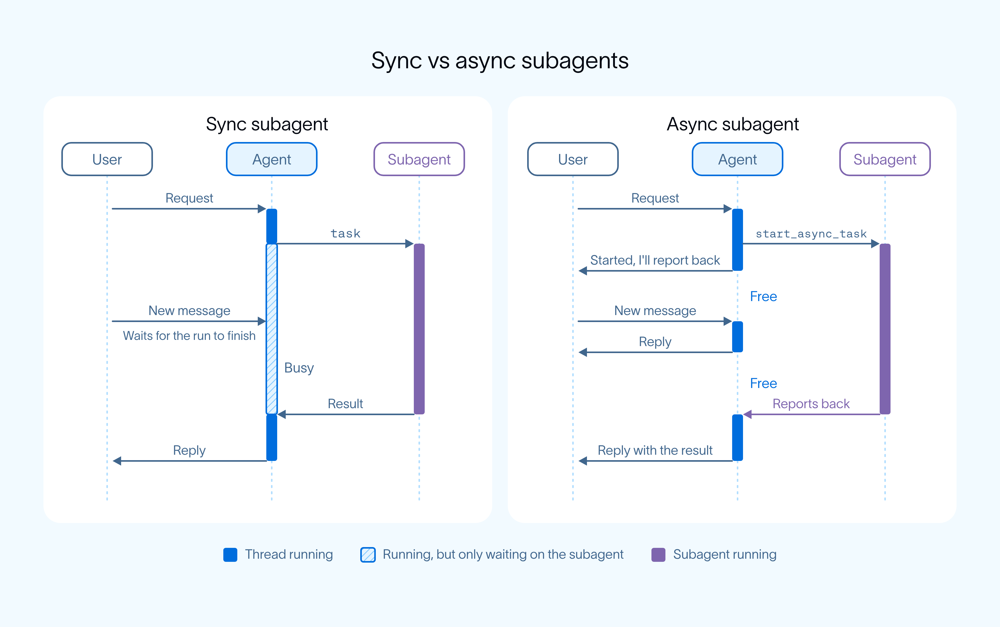
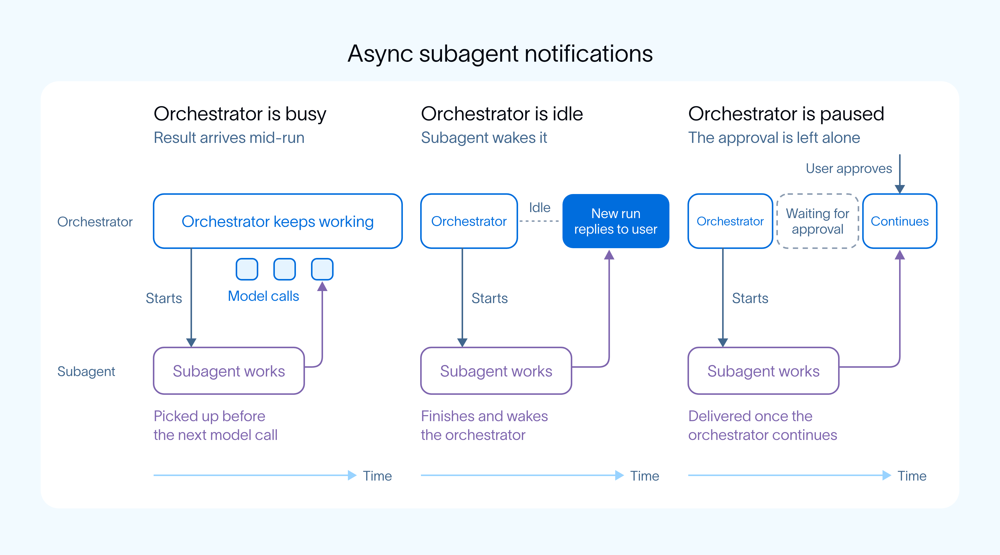

后台任务不再堵住主循环
Xudong Han 把 DeepSeek 的 Super-agent 和 LangChain 的《Agents Are Going Async》放在一起看。他的判断是：Agent 的架构正在发生一个重要变化。
他把 Agent 的这个变化收成一句趋势。原话放在下面，这里不重复后半句。
从单个 Session 的执行循环，走向能够持续处理多项任务的工作系统。
Xudong Han 推文
Xudong Han 的推文 LangChain 原文 导读约 18 分钟。精读全文等加密版，这页先不放入口。
补充：学习搭子的判断。方向有原文支撑。LangChain 自己就把 Claude Code、OpenAI 的 dots、DeepSeek Harness 列成同一类：一个人留下来，后台工人去做长活。
两套方案只能按各自写过的范围比。原推说 DeepSeek 多走了 GitHub、飞书这类事件。这是原推的对照，不是 LangChain 宣称自己没有事件触发。
三层要分开。后台异步是任务怎么执行。事件触发是任务从哪来。持久化、故障恢复、问责是另一层。这篇文章没有证明系统已经可靠自治。
原推还说状态被单独存下，免得上下文一压缩就把记录弄丢。通知那一节实际只写：没做完的任务会列进系统提示词。单独落盘、防压缩，是原推解读，这篇博客没有证明。
原推希望人在需要时还能插手。机制那一节的边界是：只有编排器自己的循环不忙，用户才够得到它。默认做法是停掉当前这一轮，再按新指令重新启动。这不是事务回滚，也不是任意时刻无损改目标。另一种是等当前这一轮结束再处理。编排器正等审批时，不打断这次审批，用户答复之后才收结果。任务通知还是测试版，接口可能还会变。
关联页 Super-agent 设计探索 讲的是 DeepSeek Harness 团队自己的长文，不是这篇 LangChain 原文。
原推先写现状：Agent 越来越能干。可长任务一跑，人经常还得盯着 Session，等它结束才能接着派活。
他认为 LangChain 在 Deep Agents 里给出的具体做法，是引入 Async Subagents。
原推对机制的转述：主 Agent，也就是 Orchestrator，负责和用户说话。耗时任务交给后台 Subagent。每个任务一条自己的 Thread。启动后立即返回，不再一直堵住主 Agent。
他接着说，更实用的一点是：任务跑起来之后，依然可以控制。
他举的例子是 Coding Agent 正在改代码，人突然要换技术方案。主 Agent 把新指令发给后台任务，可以选择中断重跑，也可以等当前工作做完再执行。这是原推的说法。原文后面把这两种做法写成 interrupt 和 enqueue，细节在第 4 节。
再下一句只是他喜欢的一个过渡，没有给出新机制。
原推接着认为：后台状态被单独留下，Context 被压缩时记录不会丢；做完会通知主 Agent；主 Agent 在做别的事，或在等人工审批，也各有办法。LangChain 原文 How notifications work 并不是这句话。原文只说未完成任务列在 system prompt 里。单独留下、防压缩，标成原推解读，未由本文证明。
原推认为这和 DeepSeek 的 Super-agent 很接近。他划的区别是：LangChain 更关注执行过程中的异步调度和控制；DeepSeek 则进一步用 GitHub、飞书等事件去发现和推进工作。后半句是原推的范围，不能写成 LangChain 原文否定了事件触发。
原推收束时用了「可能」：Agent 好不好用，看你敢不敢把活交出去，还看你需要时能不能插手。LangChain 原文 How async subagents work 没有把插手写成无条件。用户够到编排器，要等它自己的 loop 不忙。
推文末行给出 LangChain 原文链接。下面按这篇博客本身讲，不再把原推的推断算进原文。
要同时做到：马上接新指令，多件长任务一起往前走
来源二是博客 Agents Are Going Async。作者是 Sydney Runkle 和 Thushanth Bengre。文首日期写 November 5, 2026。页面把阅读时间标成 5 min。日期没有写时区。
Key Takeaways 有三条。目标变大之后，agent 要 stay responsive，同时把很多长任务往前做。Async subagents 把 agent 拆成留在用户身边的 orchestrator，和在后台跑、做完向 orchestrator 汇报的 subagents。Background work 正在变成 agent 基础设施的常态，从 coding agent 的 Claude Code，到个人 agent 的 OpenAI dots。
开头用幕僚长做比方。你交一个大项目，他只有做完才回来，你 probably 会马上辞掉他。好的幕僚长让项目在后台走，自己仍找得到，还会中途告诉你进度。作者说 agent 面向更大目标时，需要同样两个性质。
responsive：新指令来了马上做，而且带着此前的全部上下文。productive：很多大任务同时有进展。
作者把 can't 放在句中：用了很久的架构做不到同时满足这两条。标准 ReAct 循环里，一次长的工具调用会堵住循环，别的任务都排在后面。他看到的收敛是：一个 agent 留在用户身边，后台工人去做长活。Claude Code 默认让子任务在后台跑。OpenAI 的 dots 把工作交给后台工人，好让几件事同时有进展。DeepSeek Harness 的 super agent 是一个对人说话的 router，加上并行干活的后台工人。
他们把这套模式放进 Deep Agents。编排器继续对用户可用，并维持对话上下文的秩序。后台工人做完再汇报。能接的工作量跟着后台工人的数量长，不跟着一条循环的长度长。
调用立刻返回，工作在自己的线程里接着跑
agent 仍是一个循环：模型调用工具，等结果，再决定下一步。以前工具和 subagents 会堵住这个循环，直到返回，像代码把每个慢调用依次 await。async subagent 像用 asyncio.create_task 起的任务，或一个你先不 await 的 Promise。调用马上返回。工作在后台独立跑。结果以后才回来。

Async work 靠系统的两个性质。下面两条是作者加粗的原句，不是改写。
第一条加粗句是：用户要够得到编排器。Async 这件事里，Subagents 不再占住它的循环。所以只有它自己的 loop 不忙，用户才找得到，不必等每一个子任务结束。不忙是前提，不是任意时刻。
第二条加粗句是：任务并行，而且不互相堵住。工作来一件就启动一个，不用等一整批一起返回。
五个名字照原文；改进行中的任务只有 interrupt 和 enqueue
编排器用五个工具管理这些后台任务。下面五个名字保持原文，不改写。
- start_async_task：在 subagent 自己的 thread 上启动，调用马上返回。
- check_async_task：读取任务状态；做完之后，才带上结果。
- update_async_task：给正在跑的任务送新指令。
- cancel_async_task：停掉正在跑的任务。
- list_async_tasks：列出每一个任务和它的状态。
给正在跑的子任务改方向，和用户够到编排器，是两件事。编排器用 update_async_task 送 follow-up。子任务定义上的 update_strategy 决定怎么处理。下面两个名字是 interrupt 和 enqueue。纠正的例子用 Postgres。
interrupt，默认。停掉当前这次 run，再用新指令重新启动。原文拿改用 Postgres 当纠正的例子。
enqueue。先把后续指令留着，等当前 run 结束再处理。原文拿做完再跑测试当追加的例子。
补充：不要把 interrupt 说成事务回滚，也不要说任意时刻都能无损改目标。原文只写了停掉当前 run 再重启，以及 enqueue 等这次 run 结束。
未完成任务写进 system prompt；忙、闲、等审批，收结果的方式不同
每一个未完成任务都列在编排器的 system prompt 里，所以它始终知道有哪些还在飞。它可以自己用 check_async_task 去看，任务也可以自己汇报回来。
- busy：每次模型调用之前，先检查未完成任务，在这次 run 进行中把结果接上。原文的词是 mid-run。
- idle：subagent 用一次新的 run 把编排器叫醒。
- paused：正停在一次审批上。这次审批先放着，不动它。用户答复之后，结果才到。

需要审批的子任务状态显示为 waiting。用户在这个子任务自己的 thread 上答复，不打断编排器。Managed Deep Agents 接在 Slack 上时，请求会回到原来的那条 thread。
作者预期这套模式会推广到一般工具
作者预期，这套模式会从子任务推广到各处的工具。OpenAI 最近支持调用工具后继续干活，应用在后面的请求里把结果送回来。这是预期和旁证，不是本文已经做完的工具清单。
Python、JavaScript 和托管版都能开；通知仍是 beta
Async 这一档已经可以在 Deep Agents 的 Python、JavaScript，以及 Managed 里用。托管版把一个子任务设成异步，只加一个字段。
下面六段按博客示例的原顺序、原缩进、原字面量排开。博客里它们是同一段代码。公开页分段只为对照着看，拼回去就是原文。
from managed_deepagents import define_deep_agent从托管包引入
第一行从托管包引入定义函数。函数名和包名都在左边，不改字。
agent = define_deep_agent(
name="research-assistant",调用，并写上名字
接着调用这个函数。name 的字符串原样留在左边。
model="openai:gpt-5.5",
subagents=[
{
"name": "researcher",模型字面量，以及 researcher
model 用左边的模型名。子任务列表的第一项名字是 researcher。
"description": "Researches a topic in the background.",描述句原样
description 那一句英文留在左边，讲解不改写它。
"system_prompt": "Research the topic and report your findings.",系统提示原样
system_prompt 那一句也整句留在左边。
"async": True,
},
],
)一个字段放进后台
async 设为 True，括号按原缩进关上。原文说托管版只要这一个字段。
在 Managed Deep Agents 里，每个被服务的 agent 还会得到一份 general-purpose subagent 的异步副本。它因此可以在运行时决定：委派出去的工作放前台，还是放后台。
Task notifications 是 beta，所以 API 可能还会变。async-deep-agents 仓库里有一个能跑的 supervisor，带 researcher 和 coder 两个 subagents，Python 和 TypeScript 都有。
原文的结尾是邀请试用，并让读者到 GitHub issues 或 forum 说看法。这里没有给出上线承诺。
- Xudong Han 推文
- Agents Are Going Async
- Claude Code sub-agents
- OpenAI dots
- DeepSeek Harness 的 super agent 帖
- Deep Agents
- Python async subagents
- JavaScript async subagents
- Managed Deep Agents subagents
- 子任务完成通知
- 在频道里答复审批
- OpenAI async tool calling
- async-deep-agents 仓库
- GitHub issues
- LangChain forum
- 关联：Super-agent 设计探索（另一篇原文）
三道题，专打容易说满的地方
这三题考的是原文边界。答错只标你选的那一项，不揭晓答案。